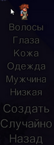

Начало
И так, начало состоит из создания персонажа. Можно создать своего персонажа как угодно: создание формы и цвета волос, цвета глаза, рубашки, штанов и так далее. Так же доступна возможность, задать сложность игры для персонажа.
Софткор (Низкий) — сложность обычного персонажа, с которого при смерти, выпадают только деньги.
Медиумкор (Средний) — здесь сложнее, чем у софткора. При смерти, вы теряете (дропаются) не только деньги, но и ваши вещи.
Хардкор (Сложный) — она сложна тем, что при смерти из персонажа ничего не выпадает. Персонаж сразу умирает и на этом игра в мире заканчивается.
После создания вам нужно выбрать размер мира: маленький, средний и большой. Ещё есть, два типа уровня сложности миров – обычный, эксперт. Думаю, понятны их различия. В последней версии доступен выбор одного из биомов зла: автоматический выбор, Кримзон или же Искажение. При автоматическом режиме, у вас генерируется один из биомов зла: Кримзон или Искажение.
Кримзон/Багрянец (Crimson) — биом кровавого цвета. В нём обитает босс Мозг Ктулху. Для новичков этот босс будет сложнее, чем в Искажении. Но, дроп (в дальнейшем - выпадение) в дохардмоде(начальный режим игры) и хардмоде(сложный режим игры) будет лучше, чем в альтернативном биоме.
Искажение (The Corruption) — больше фиолетового оттенка. Как уже писал, это альтернатива Кримзону. Здесь обитает босс Пожиратель миров. Он легче Мозга Ктулху, но тут выпадающие вещи и предметы будут хуже по качеству, чем в Кримзоне.
Кстати, после убийства босса Стена плоти, можно будет при создании нового мира выбрать зло.
В начале игры имеется множество биомов, таких как: Лес, Зимний биом, Кримзон/ Искажение, Пустыня, Джунгли, Море, Каменный слой, Ад и Космос. Так же есть мини биомы: Гранитный биом, Мраморный биом, , Пирамида.
Чаще всего вы будете начинать игру в Лесном биоме, но не исключается небольшой шанс того, что точка появления персонажа будет и в другом биоме как — Джунгли или Зимний биом, Кримзон/Искажение.
После того, как вы появились, вам будут доступны два вида инструмента, и одно оружие. Медный клинок, Медная кирка и Медный топор. Первым делом, лучше всего, облутать мир. Пойти сначало в левую сторону. Хороший лут можно встретить в море, там есть Ботинки хождения по воде, ласты, а так же трезубец. Если в одной из сторон заспавнились Джунгли, то значит, в той же стороне не будет Данжа, он будет в противоположной стороне. И так же с зимним биомом, но при наличие данного биома в одной из сторон, там будет данж. После того, как вы облутали мир, будет наступать ночь. Ночь для новичка опасна, так что советую быстро нарубить дерева, и построить себе дом. Лучше, чтобы поначалу вы построили дом, на плоской выравненой равнине на месте появления или вблизи спавна персонажа, после того как определились с местом стоительства своего первого дома, рекомендуется делать его из добытого рядом дерева (так быстрее): Стены, создаёте верстак, крафтите стены для размещения на заднем фоне, факела. Для поселения Гида (не игровой персонаж - NPC), тут же создаёте, стол, стул, две двери, также комната должна быть размерами 9x6 блоков — это необходимый минимум, чтобы не игровой персонаж, заселился в построеную вами комнату. В течении всего прохождения игры, он будет полезен. У него можно посмотреть рецепт любого предмета, который подписан как « Материал». Нажав во всплывшем окошке разговора, соответствующую надпись «Изготовление» и поместив предмет в нужный слот, около столбца крафтов. Для того чтобы поселить остальных NPC, стройте допольнительно соответствущие комнаты или по желанию игрока — целый дом. Всё зависит от фантазии, самого геймера.
В самой игре, насчитывается около 21 NPC это: Гид, Торговец, Торговец красителями, Маляр, Медсестра, Санта-Клаус, Оружейник, Подрывник, Дриада, Тусовщица, Гоблин-инженер, Шаман, Механик, Волшебник, Труфель, Стимпанкер, Киборг, Собиратель налогов.
NPC, которых нельзя будет поселить в созданные дома — это Странствующий Торговец, Скелет-Торговец.